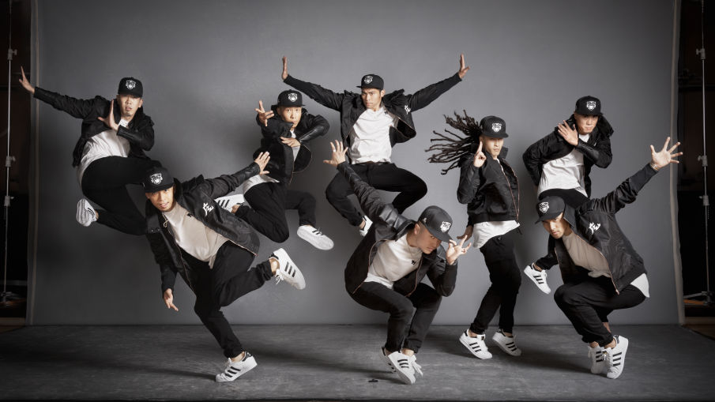
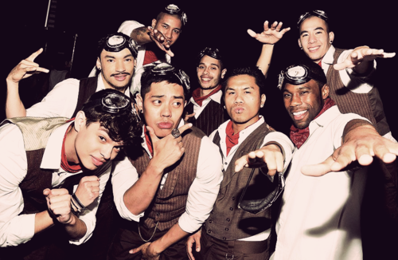
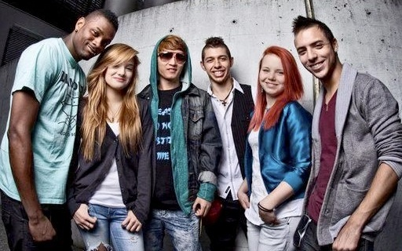

A brotherhood made up of over 30 members from all over the state of California who support each other at all costs. They are known for their intricate coreography style and creative story telling through dance. They competed on America's Best Dance Crew Season 8 and placed second. Only 8 of the members got to participate on the show. Their motto is "Respect all...Fear none."Kinjaz Website
A crew based in Los Angeles, California that is made up of several dancers and coreographers. They started to gain much noticed when they participated in the World Of Dance Competition and then entered America's Best Dance Crew Season 7 and got third place.
Won first place in America's Best Dance Crew Season 6. They are dedicated to Inspiring, Motivating, and Energizing people to be themselves. Their style of dance consists of their own dance style called "Brain Bangin" which is a series of visuals and illusions made with the human body.I.aM.mE Website
